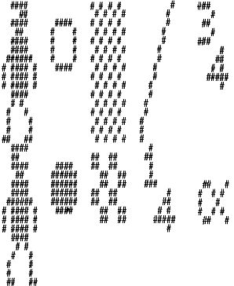
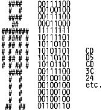

Nascom Journal |
Oktober 1981 · Ausgabe 10 |
Kürzlich habe ich einen Graphics Generator für den Nascom 2 erworben, um meinen Nascom 1 um die Graphic Möglichkeiten zu erweitern, Dabei ist mir aufgefallen, daß dieser Generator bis auf die Pins 19 und 21 pinkompatibel mit den Eproms auf meiner Grundplatine ist. So habe ich den Generator einfach einmal in einen freien Epromsockel meiner Erweiterung gesteckt und mit folgendem Programm die Nullen und Einsen durch den Drucker in schwarze und weiße „Punkte“ verwandelt. Durch Start bei C80 und als zweiten Parameter Eingabe der Startadresse im EPROM wird ein Zeichen von 8 Punkten Breite und 16 Punkten Höhe abgebildet.
Wenn ein Charactergenerator aber nur ein einfaches EPROM ist, warum sollte man sich dann nicht seinen eigenen Charactergenerator programmieren?
Da, wie bereits erwähnt, ein Character aus 8 Spalten und 16 Reihen besteht, sollte man sich für selbstprogrammierte Zeichen zunächst ein „Schnittmuster“ aufzeichnen, und darin die Punkte eintragen, die gesetzt werden sollen. Dann wird ein beliebiger Bereich im RAM gewählt und von links oben beginnend Zeile für Zeile des Characters als Byte eingegeben, wobei jeder gesetzte Punkt als 1 und jeder nichgesetzte als 0 betrachtet wird.
Die Zeile . . .. . wird als 10101101 betrachtet und als AD gespeichert. Entsprechend verfährt man mit den folgenden 15 Zeilen. Daß ein Zeichen exakt 16 Bytes benötigt, macht die Speicherung übersichtlicher. Beginnt Ihr „Character-RAM“ z.B. bei 0D00, so folgt das nächste Zeichen in 0D10, dann 0D20 etc. Man verliert also nicht den Überblick.
Wenn Sie eine Reihe von Zeichen programmiert haben, müssen sie in ein EPROM 2716 „geschossen“ werden, (Maximal sind 128 Zeichen möglich), Nach Einstecken des EPROMS in den Graphics Sockel des Nascom 2 können Ihre Zeichen abgebildet werden.
Nascom 1 Besitzer müssen leider in der Lage sein, ein 2732 EPROM programmieren zu können, um mit Hilfe der Graphic Karte von Bernd Ploss eigene Zeichen herstellen zu können. Die Fassung des Nascom 1 ist leider für 2716 nicht pinkompatibel.
Es wurde aber schon einmal eine Graphic Karte von MKS angeboten, vielleicht kann die ein selbstprogrammiertes EPROM aufnehmen? Ich bin darüber leider nicht informiert.
Vor dem Brennen des EPROMs empfiehlt es sich, mit obigem Druckprogramm die selbsterstellten Zeichen auszudrucken. Man erhält einen Eindruck Ihrer Gestalt und kann Fehler verbessern.
Drücken von NEW LINE bildet übrigens den nächsten Character ab, eine beliebige Taste läßt zum Monitor zurückspringen.
|  | |
|  | Einige Darstellungen aus dem Graphics EPROM, Pin 19 +5V o.0 , Pin 21 liegt an +5V . |
| Seite 7 von 28 |
|---|